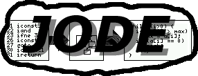

Best viewed with
|  | Powered by Best viewed with |
| Home | Project page | Applet | Download | FAQ | Feedback | Documentation | License | History | Links | Blue Sky |
JODE is Copyright © 1998-2000 by Jochen Hoenicke.
This program is free software; you can redistribute it and/or modify it under the terms of the GNU General Public License as published by the Free Software Foundation; either version 2 of the License, or (at your option) any later version.
This program is distributed in the hope that it will be useful, but without any warranty; without even the implied warranty of merchantability or fitness for a particular purpose. See the GNU General Public License for more details.